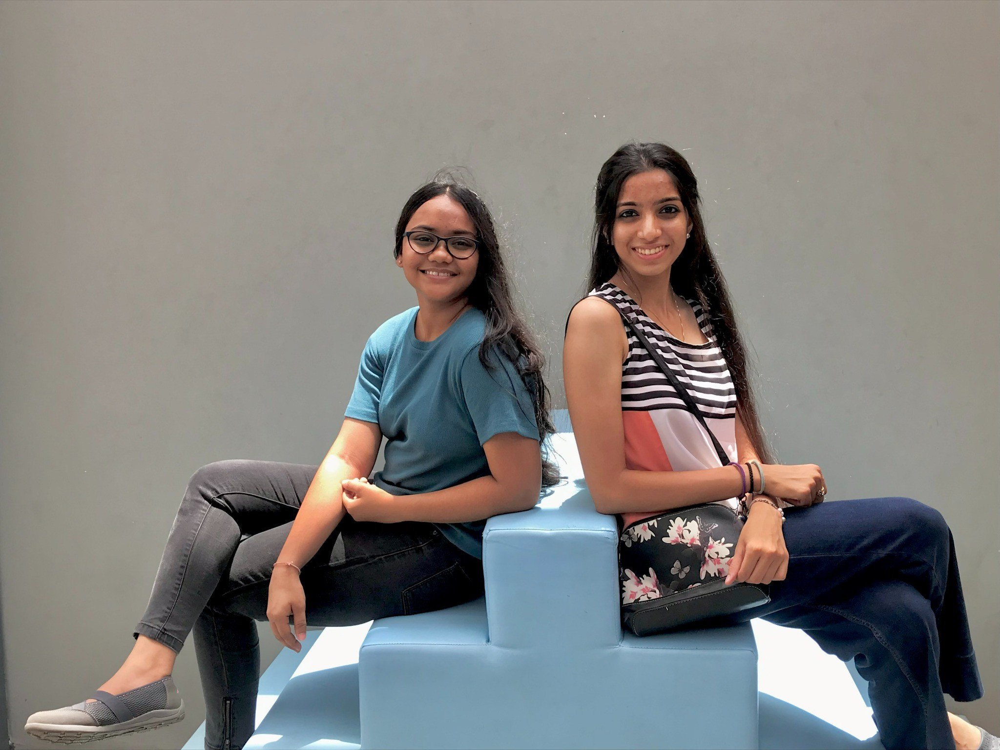
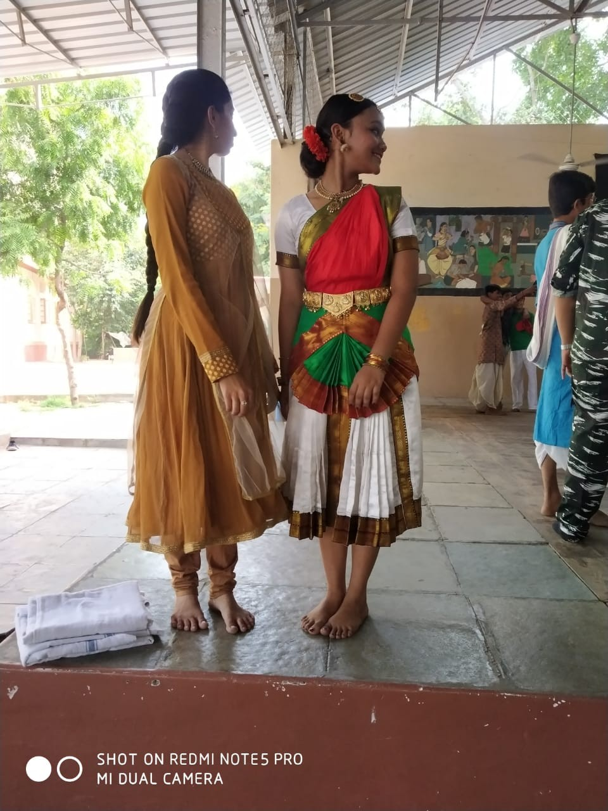
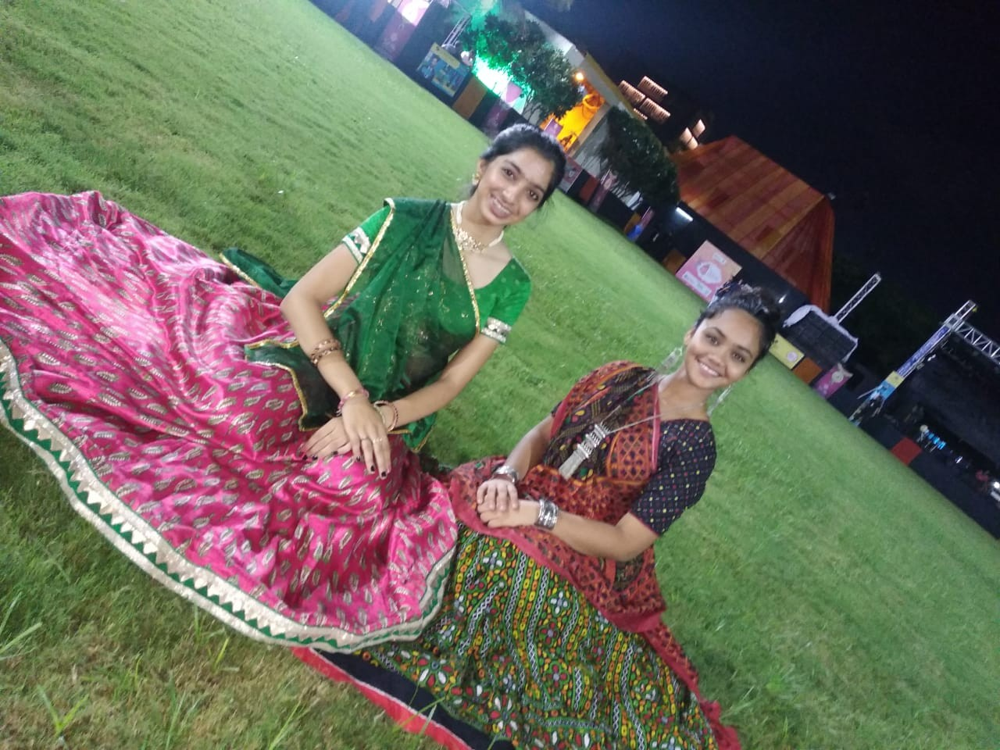
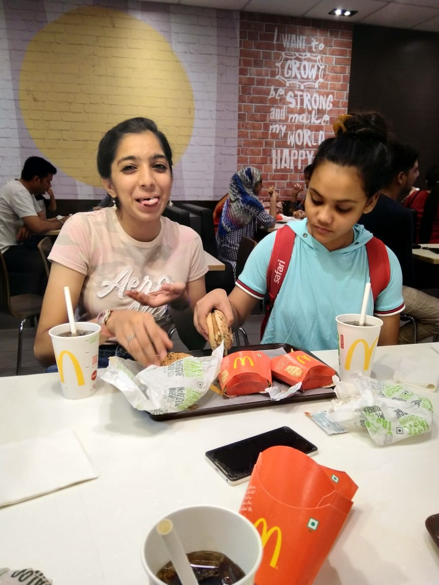
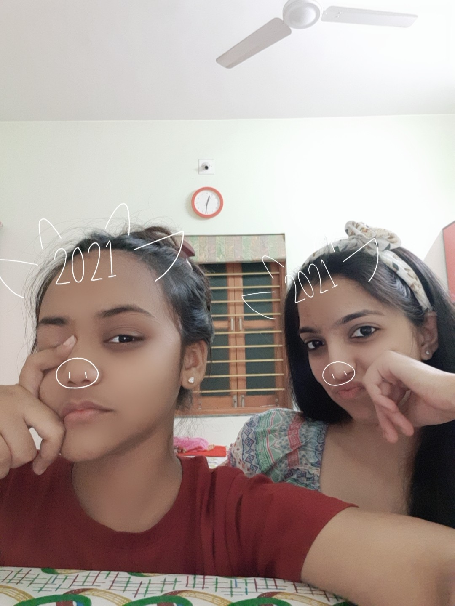

A LITTLE TIME CAPSULE · 10+ YEARS OF FRIENDSHIP
All these years,
and still us.
For Shruti — a tiny corner of the internet for all the laughter, the growing up, the dressing up, and the moments that became memories.
Wander through our memories ↘made with love, just because ♡

and counting
Some people become part of your life so naturally that you can’t imagine the story without them.
✿PAGES FROM OUR PHOTO ALBUM
Little moments.
Big pieces of our story.
Four snapshots, a thousand things to remember.




and so many more memories that didn't make it into this album…
A THOUGHT TO KEEP
We've changed a little
and grown a lot —
but I'm glad this stayed.
Here's to every version of us we've known so far, and all the ones still waiting to meet.
A NOTE, JUST BECAUSE
Dear Shruti,
More than ten years of knowing you. Think about that! We've collected so many versions of ourselves along the way — from getting dressed up for performances and celebrations to the random meals, silly selfies, and moments that probably seemed ordinary at the time.
I made this little page because I wanted to keep a few of those moments somewhere special. Not for a birthday or an occasion. Just because old memories deserve to be revisited, and because I'm grateful you're part of mine.
Here's to all the chapters we've already lived and all the ones still ahead. I'm glad our story has you in it.
Always cheering you on, ♡
✧
♡